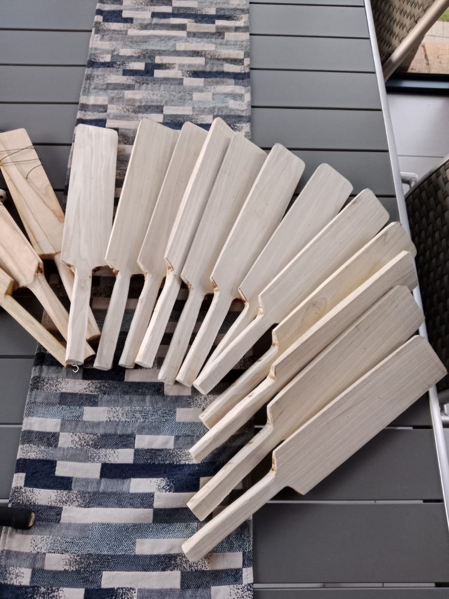
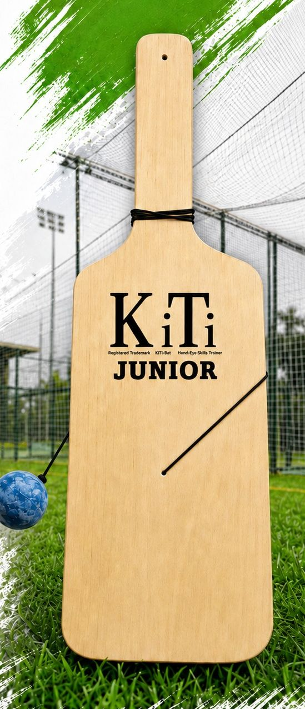
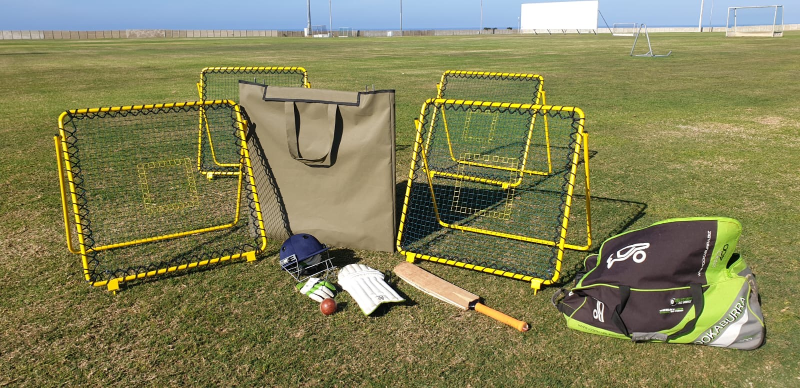
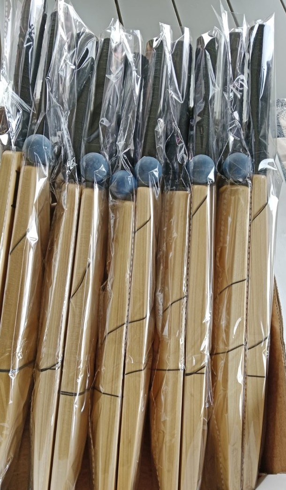
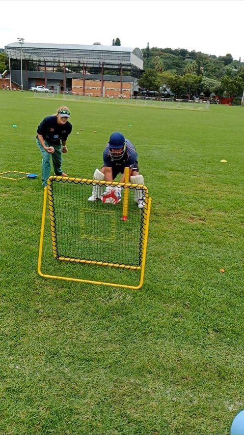

The original
KiTi-Bat
45 cm long, 7 cm wide, American poplar. A narrow face and very little margin for error — which is exactly what sharpens the eye.
R350 each · ages 5–80
See the KiTi-Bat
A rubber ball on an elastic string and a bat you have to watch all the way in. That is the whole idea — and it works for a five-year-old in a driveway just as well as it does for a first-team batter. Every bat is shaped by hand in our own workshop.

Hand-eye coordination is the difference between a player who reacts and a player who reads the ball. Two bat sizes and a rebound net, each training it from a different angle.
45 cm long, 7 cm wide, American poplar. A narrow face and very little margin for error — which is exactly what sharpens the eye.

For the little ones30 cm long, 11 cm wide, SA pine plywood. A wider face and a shorter swing, so young players get clean contact from day one.

Back in stockThe hand-strung rebound net that fires the ball back at speed. Catching, fielding, reaction time — for cricket, netball and tennis.

A rubber ball hangs from the bat on an elastic string. You hit it, it comes straight back, and the game is to keep it going on the face of the bat — hit after hit after hit.
Every KiTi starts as a rough plank. It gets cut, shaped, sanded and finished by hand — and nothing leaves the workshop until it swings the way it should.
That is why no two are quite identical, and why a KiTi feels like something a person made rather than something a machine spat out.
Block of poplar to finished trainer — five stages, all by hand.
Catch-It returns a thrown ball at incredible speed. Each net is hand-strung, almost like a tennis racket, and the tension is what gives it its life. Use it solo or as a team trainer — for cricket, netball and tennis.

No middleman, no catalogue. Send us a WhatsApp or an email and we'll confirm stock and price the same day. Courier is roughly R50 and is not included. Bulk rates on application for coaches, schools, clubs and academies.